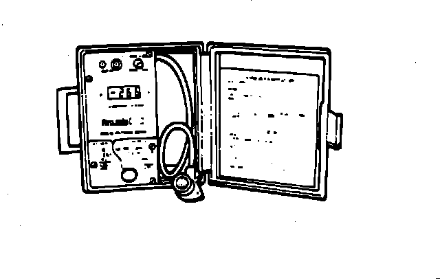

Digital Volt/Ohm Meter (DVOM)
Digital Volt-Ohmmeter:

PURPOSE
Like Analog meters, Digital Volt/Ohm Meters (DVOM's), can be used to measure and compare actual values with expected circuit values.
ADVANTAGES OF DIGITAL METERS OVER ANALOG METERS
DVOM's have a numerical readout, which is more precise than the needle reading on an analog meter.
DVOM's have a higher internal impedance (10 Meg ohms typical), which prevents loading or damaging digital (computer related), circuits.
VOLTMETER CAUTION: When measuring voltage always connect meter in parallel to a circuit or component. Connecting a voltmeter in series with a circuit may damage the voltmeter and/or the circuit.
OHM METER CAUTION: Always disconnect any voltage sources from the circuit or component, before attempting to measure resistance of a circuit or component. Connecting an ohmmeter to a circuit while voltage is present will damage the meter and/or the circuit.